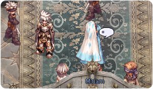
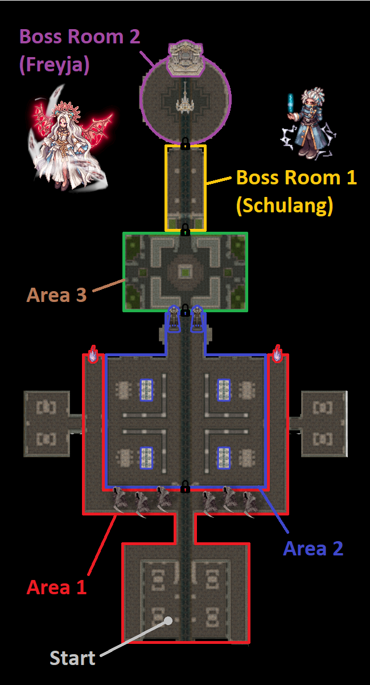
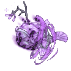
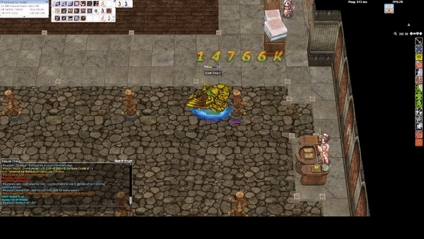

File list
Jump to navigation
Jump to search
This special page shows all uploaded files.
{kind=link}
| Date | Name | Thumbnail | Size | User | Description | Versions |
|---|---|---|---|---|---|---|
| 15:08, 14 March 2023 | 18 11.png (file) | 137 KB | Tokeiburu | 1 | ||
| 15:15, 14 March 2023 | 18 12.png (file) | 134 KB | Tokeiburu | 1 | ||
| 19:35, 14 March 2023 | 18 13.png (file) |  |
135 KB | Tokeiburu | 1 | |
| 19:38, 14 March 2023 | 18 14.png (file) | 136 KB | Tokeiburu | 1 | ||
| 20:22, 14 March 2023 | 18 15.png (file) | 135 KB | Tokeiburu | 1 | ||
| 20:26, 14 March 2023 | 18 16.png (file) | 136 KB | Tokeiburu | 1 | ||
| 20:35, 14 March 2023 | 18 17.png (file) | 137 KB | Tokeiburu | 1 | ||
| 20:41, 14 March 2023 | 18 18.png (file) | 126 KB | Tokeiburu | 1 | ||
| 20:54, 14 March 2023 | 18 19.png (file) |  |
141 KB | Tokeiburu | 1 | |
| 21:00, 14 March 2023 | 18 20.png (file) |  |
117 KB | Tokeiburu | 1 | |
| 21:07, 14 March 2023 | 18 21.png (file) |  | 138 KB | Tokeiburu | 1 | |
| 21:10, 14 March 2023 | 18 22.png (file) |  |
137 KB | Tokeiburu | 1 | |
| 21:11, 14 March 2023 | 18 23.png (file) | 121 KB | Tokeiburu | 1 | ||
| 21:16, 14 March 2023 | 18 24.png (file) | 127 KB | Tokeiburu | 1 | ||
| 21:21, 14 March 2023 | 18 25.png (file) | 124 KB | Tokeiburu | 1 | ||
| 21:23, 14 March 2023 | 18 26.png (file) |  |
94 KB | Tokeiburu | 1 | |
| 01:37, 18 March 2023 | EDGray.gif (file) |  |
1.35 MB | G00suede | 1 | |
| 21:01, 18 March 2023 | Villa of deception overview.png (file) |  | 475 KB | Yorutia | 1 | |
| 22:44, 18 March 2023 | Villa of deception.png (file) |  |
58 KB | Yorutia | 1 | |
| 11:42, 27 March 2023 | 710065467 03 ArchMage m.png.c908f533e7f25d1fb824b0ca7a74f912.png (file) | 50 KB | Miyu | 1 | ||
| 11:42, 27 March 2023 | 1538820766 04 ArchMage f.png.42a57c21a95693a607abaf74acb01af4.png (file) |  |
50 KB | Miyu | 1 | |
| 11:43, 27 March 2023 | Bio katrinn01mio.png (file) |  |
212 KB | Miyu | 1 | |
| 10:35, 2 April 2023 | EDSpam.gif (file) | 1.91 MB | G00suede | 1 | ||
| 10:43, 2 April 2023 | 2ndclass.png (file) | 36 KB | G00suede | 1 | ||
| 10:44, 2 April 2023 | 3rdclass.png (file) | 39 KB | G00suede | 1 | ||
| 10:45, 2 April 2023 | 4thclass.png (file) |  |
36 KB | G00suede | 1 | |
| 13:43, 5 April 2023 | Raku Flee Tank.jpg (file) | 130 KB | G5457s | 1 | ||
| 17:46, 9 April 2023 | SN Pneuma Blocks Pain.jpg (file) | 404 KB | G5457s | 1 | ||
| 17:37, 26 April 2023 | ElementalMaster F.png (file) |  |
624 KB | Melzdash | 1 | |
| 14:39, 4 May 2023 | Shield Shooting.gif (file) |  |
1.33 MB | G00suede | 1 | |
| 14:48, 4 May 2023 | 3rd Job Shield.png (file) |  |
42 KB | G00suede | 1 | |
| 14:49, 4 May 2023 | 4th job skills.png (file) |  |
52 KB | G00suede | 1 | |
| 14:57, 4 May 2023 | Tate-no-yuusha-naofumi.gif (file) |  |
1.56 MB | G00suede | 1 | |
| 15:11, 4 May 2023 | Kyrielight-mash.gif (file) |  |
1.86 MB | G00suede | 1 | |
| 02:17, 24 May 2023 | Arachring.gif (file) | 9 KB | Drakamg | ancient juperos 3 mini-boss | 1 | |
| 14:10, 24 May 2023 | Primordial thief bug.gif (file) |  |
9 KB | Drakamg | 1 | |
| 14:10, 24 May 2023 | Primordial andre.gif (file) |  |
14 KB | Drakamg | 1 | |
| 14:11, 24 May 2023 | Primordial rocker.gif (file) |  |
22 KB | Drakamg | 1 | |
| 14:11, 24 May 2023 | Pestilent ceratiidae.gif (file) |  | 35 KB | Drakamg | 1 | |
| 14:12, 24 May 2023 | Pestilent limacina.gif (file) |  |
23 KB | Drakamg | 1 | |
| 14:12, 24 May 2023 | Pestilent toad.gif (file) |  |
48 KB | Drakamg | 1 | |
| 20:57, 31 May 2023 | Image.thumb.png.e649df658a6da451ef021d032d0d907c.png (file) | 201 KB | Osa700 | 1 | ||
| 05:51, 1 June 2023 | Lordoforc.png (file) | 80 KB | Squidtonio | 3 | ||
| 06:38, 1 June 2023 | Orcmap.png (file) |  |
133 KB | Squidtonio | 2 | |
| 06:46, 1 June 2023 | Gob2.png (file) |  |
119 KB | Squidtonio | 1 | |
| 06:50, 1 June 2023 | Gobville.png (file) |  |
87 KB | Squidtonio | 2 | |
| 07:04, 1 June 2023 | Reptable.png (file) | 4 KB | Squidtonio | 1 | ||
| 07:05, 1 June 2023 | Repbutton.png (file) | 64 KB | Squidtonio | 1 | ||
| 09:42, 7 June 2023 | EarthDrivenew.gif (file) |  | 1.79 MB | G00suede | 1 | |
| 17:55, 17 June 2023 | Thick Wires.png (file) | 654 KB | Apainitu123 | 1 |
{kind=link}
{kind=link}
{kind=link}
{kind=link}
{kind=link}
{kind=link}
{kind=link}
{kind=link}
{kind=link}
{kind=link}
{kind=link}
{kind=link}
{kind=link}
{kind=link}
{kind=link}
{kind=link}
{kind=link}
{kind=link}
{kind=link}